ECON 2316 • Microeconomic Theory • Chapter 10
Perfect Competition
Chapter 9 ended on a number — \$82.81/kWh, the gigafactory's long-run break-even price. This chapter asks: why that number? And once it's pinned, how many gigafactories does the world need?
Dr. Richeng Piao
Department of Economics
Northeastern University
Learning Objectives
By the end of this chapter, you will be able to…
10.1
State the four conditions for perfect competition and explain why "perfect competition" is a benchmark, not a literal description.
10.2
Build market supply as the horizontal sum of firm supplies \(Q^s(p)=\sum_i q_i^*(p)\) and clear the short-run market with \(N\) fixed.
10.3
Derive the long-run free-entry equilibrium: \(p^{LR}=\min LRATC\), \(\pi=0\), and the firm count \(N^* = Q^d(p^{LR})/q^*\). (central result)
10.4
Prove the First Welfare Theorem — competitive equilibrium maximizes total surplus \(TS(Q)=\int_0^Q [P^d-P^s]\,dq\).
10.5
Contrast capital free entry (gigafactories) with biological adjustment (eggs), and show how breaking condition 1 — one chain buying all twenty shops — breaks the welfare theorem.
From One Firm's Supply to the Whole Industry
Ch 9 — the single firm
- Profit-max: \(p = MC(q^*)\)
- Supply \(=\) inverse-\(MC\) above shutdown
- SR snapshot: \(p=\$84\), \(q^*=50.9\) GWh, \(\pi^*=\$58.6\)M
- \$82.81 break-even: the plant's \(\min ATC\) on the three-zones figure
Ch 10 — the industry
- Market supply \(=\) horizontal sum of firm supplies
- Short run: \(N\) fixed, price clears
- Long run: free entry drives \(\pi \to 0\)
- Knife-edge resolved: \(p^{LR}=\min LRATC\); \(N^*\) is the equilibrating variable
The Ch 9 \$84 was an SR snapshot; the \$82.81 was a firm-level derivation. Today the \$82.81 becomes an industry-equilibrium prediction: free entry pushes the global pack price down to exactly \(\min LRATC\), and the \$1.19 wedge between \$84 and \$82.81 is the slack that drives entry over the long run.
Free Entry in the Wild — The 2024–2026 Battery Shakeout
November 2024: Northvolt — Europe's flagship battery startup, \$15B from VW, Goldman, BlackRock — files for Chapter 11. Its cost ran ~\$130/kWh against a \$84/kWh China-frontier price (the price Chapter 9 used); its plant ran at ~5% of capacity. The board chose exit.
The same year, CATL, Stellantis-Samsung, and LG Energy broke ground on new gigafactories. Some firms entering, some exiting — same global market, same year.
This is perfect competition in the wild: capital flows in where \(\pi > 0\) and out where \(\pi < 0\), with price adjusting toward \(\min LRATC\).
\$15B
Northvolt backing — exited anyway (Nov 2024)
~5%
Skellefteå plant capacity utilization in 2024
100
GWh CATL Hungary plant (entering, 2026)
\$82.81
Where the model says price settles
Britishvolt collapsed Jan 2023; SVOLT abandoned Brandenburg May 2024; FREYR walked from a \$2.6B Georgia plant Feb 2025. The model predicts where this noisy entry/exit process settles — and \$82.81 is that point.
§10.2
Four Conditions
What does it take for a market to be "perfectly competitive"?
A Market Is Perfectly Competitive If…
1. Many small firms
No firm is a non-trivial share of output, so no firm's decision moves the price.
2. Homogeneous product
Every firm's output is identical; buyers care only about price, not brand.
3. Free entry & exit
Firms enter or leave without a fixed cost beyond the capital they install or abandon.
4. Perfect information
Everyone knows every price, every cost structure, every quality.
Each is an idealization — none is literally true in any real market. Condition 1 is closest to true for Iowa corn or a single trader on the Chicago Board of Trade; Condition 2 for #2 yellow corn; Condition 3 where capital is portable; Condition 4 where prices are listed and updated.
Price-Taking, Made Formal
For an individual firm \(i\), its own output cannot move the price:
\(\displaystyle \frac{\partial p}{\partial q_i} = 0\)
This does not mean prices are constant — they move when aggregate supply or demand shifts. It means any single firm's contribution is too small to matter. The firm treats \(p\) as exogenous — exactly what let us set \(p=MC(q^*)\) in Ch 9.
Contrast (Ch 11): a monopolist has \(\partial p/\partial q < 0\), so \(MR = p + (\partial p/\partial q)q < p\). The gap is the markup; under perfect competition the markup is zero.
Heads Up 10.1
"Perfect competition" does not mean "perfect markets." The four conditions describe a limiting case, not a claim that real markets work flawlessly. The model's value is a clean prediction (\(p=\min ATC\), surplus maximized) for any market that comes close enough.
Is the battery industry "close enough"? An empirical question — but §10.5's \(N^*=50\) is close to the 30–40 gigafactories actually operating in 2025, so industry-wide quantity dynamics still track the benchmark despite CATL's 39% share.
Application 10.1 — Cocoa Futures as Canonical Price-Taking
Want a market closer to the four conditions than batteries? ICE Cocoa futures — thousands of contracts/day, many small participants, a homogeneous delivery grade, near-perfect price information.
West African drought + crop disease drove the price from ~\$4,200/ton (mid-2023) to over \$10,000/ton (Mar 2024) — a 2.4× spike in nine months — then back to ~\$3,240 by Mar 2026 as production rebounded.
No single farmer or trader moved this price: \(\partial p/\partial q_i = 0\) is closer to literal truth here than in any battery market. The chapter's machinery applies directly, without heavy qualification.
\$4.2K
Cocoa \$/ton, mid-2023
\$10K+
Peak \$/ton, March 2024
\$3.2K
\$/ton by March 2026 (rebound)
2.4×
Nine-month price swing
Electricity Generation Is a Competitive Market
Electricity has two very different sides. The wires are a natural monopoly (Ch 11), but generation, where the power is made, is close to perfect competition.
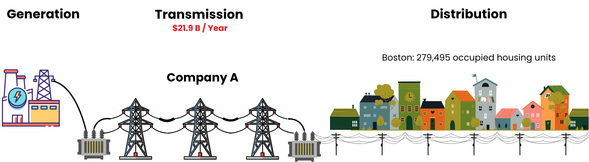
1 · Generation (this chapter): many plants (coal, gas, nuclear, wind, solar) bid into one shared pool. Price takers.
2 · Transmission: one high-voltage grid with an enormous fixed cost, so a natural monopoly (Ch 11).
3 · Distribution: the local wires to every home, also a regulated monopoly.
In generation, \(\partial p / \partial q_i = 0\): dozens of plants sell an identical product (a MWh is a MWh) into one market, and no single plant moves the wholesale price. The grid operator dispatches plants in merit order, cheapest \(MC\) first, until demand is met, so the wholesale price equals the \(MC\) of the last plant switched on.
A Generator's Marginal-Cost Curve Is Its Supply Curve
A generator runs its cheapest unit first. As the wholesale price rises, it brings costlier plants online in merit order:
- Plant A (coal) — cheapest, ~\$18/MWh; dispatched first.
- Plants B & C (gas) — costlier (~\$37, \$39/MWh); switched on only once the price clears their \(MC\).
- Maximum capacity — output can't rise further, so supply turns vertical.
The rising \(MC\) curve (above shutdown) is the firm's short-run supply curve — the §10.3 building block. Sum these step-curves across all generators and you get market supply.
Electricity generation is the clearest real competitive market we have: a homogeneous product, many generators bidding into one pool, and a price nobody individually sets.
§10.3
Market Supply: The Horizontal Sum
\(\displaystyle Q^s(p) = \sum_{i=1}^N q_i^*(p)\)
Industry Short-Run Supply Curve
Market (industry) supply is the horizontal sum of every firm's short-run supply curve: at each price, add up the quantities.
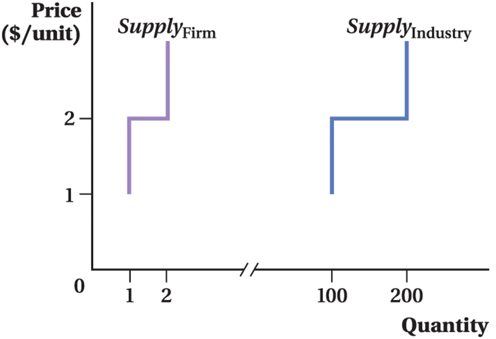
Identical firms: one firm's curve, scaled out by \(N\).
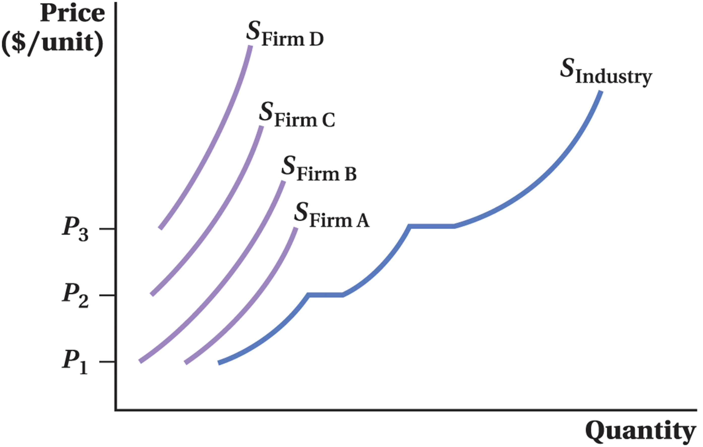
Different firms: add the curves left-to-right at each price.
Industry output rises as \(P\) rises for two reasons: (1) each operating firm's \(MC\) slopes up, so it makes more; (2) higher-cost firms cross their shutdown price and switch on.
Add Quantities Across Firms at Each Price
Every firm faces the same price \(p\) (price-taking). What differs is the quantity each supplies. So we add along the quantity axis:
\(Q^s(p) = \sum_{i=1}^N q_i^*(p) \;\xrightarrow{\text{symmetric}}\; N\cdot q^*(p)\)
With symmetric firms, market supply is just \(N\) copies of one firm's curve, scaled horizontally. For our gigafactory cohort: \(N\) times the Ch 9 firm supply.
Heads Up 10.2
Sum quantities, not prices. There is no meaning in adding firm \(A\)'s \$4 shutdown price to firm \(B\)'s \$6. The price is the same for everyone; quantities are what differ.
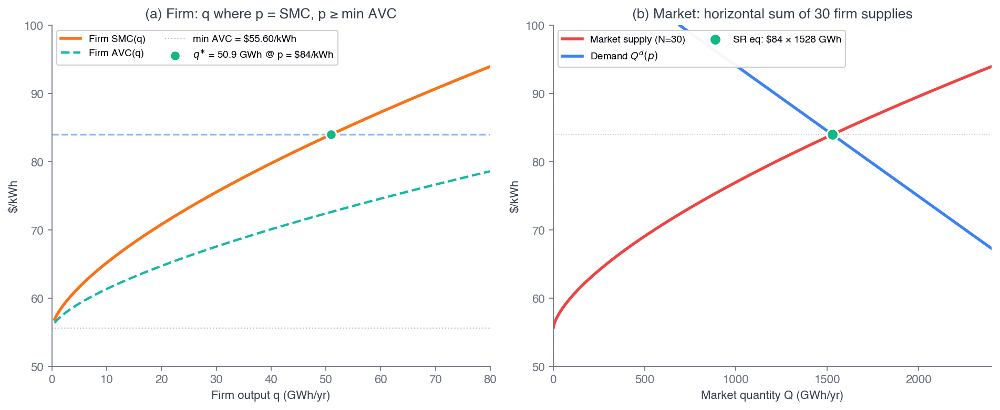
Fig 10.2 — firm supply (left) sums horizontally into market supply (right).
Calculus Corner 10.1 — The Market Elasticity Equals the Firm Elasticity
Symmetric firms, \(Q^s = N q^*(p)\). Compute the market-supply elasticity:
\[ \varepsilon^s_{\text{mkt}} = \frac{p}{Q^s}\frac{dQ^s}{dp} = \frac{p}{N q^*}\,N\frac{dq^*}{dp} = \frac{p}{q^*}\frac{dq^*}{dp} = \varepsilon^s_{\text{firm}} \]
The \(N\) cancels. Multiplying a curve by a constant doesn't change its percentage responsiveness.
For our gigafactory, the firm-supply elasticity is \(1.5\cdot p/(p-m)\). At \(p=\$84\), \(m=\$55.6\):
\(\varepsilon^s = 1.5 \cdot \dfrac{84}{84-55.6} = 1.5 \cdot \dfrac{84}{28.4} \approx 4.44\)
Same number at \(N=1\), \(N=30\), or \(N=50\). The \(1.5\) is pure technology \((\beta/(1-\beta))\); the \(p/(p-m)\) factor blows it up because output responds to the thin value-added margin \(p-m\), not to \(p\) directly.
Different Costs: Three Generators, One Market Supply
Each generator’s supply is its own merit-order staircase, cheapest plant first. At every price, add the three quantities: that sum is the market supply curve.
Market supply rises with \(P\) for two reasons: firms already running climb their own \(MC\) steps, and higher-cost plants switch on. Every plant that runs has \(MC \le P\), so the market price equals the \(MC\) of the last plant switched on.
Walkthrough 10.1 — Horizontal Sum with Heterogeneous Shutdowns
Problem. Firm \(A\): \(q_A^*(p)=2(p-4)\) for \(p\geq 4\), else 0. Firm \(B\): \(q_B^*(p)=3(p-6)\) for \(p\geq 6\), else 0. Construct market supply \(Q^s(p)\) on \([0,10]\).
Set up & solve — three regions
\(p\in[0,4)\): no firm operates. \(Q^s = 0\).
\(p\in[4,6)\): only \(A\). \(Q^s = 2(p-4) = 2p-8\).
\(p\in[6,10]\): both. \(Q^s = 2(p-4)+3(p-6) = 5p-26\).
Check the kink at \(p=6\)
From below: \(2(6)-8 = 4\). From above: \(5(6)-26 = 4\). Continuous — no jump.
But the slope jumps from 2 to 5: firm \(B\)'s output is added on once \(p\geq 6\). Market supply kinks at each firm's shutdown threshold.
Takeaway. Heterogeneous markets have piecewise supply: each kink adds the next firm. The slope is the sum of operating firms' slopes — the seed of upward-sloping long-run supply in §10.6.
Walkthrough 10.1, Graphed — A Kinked Market Supply
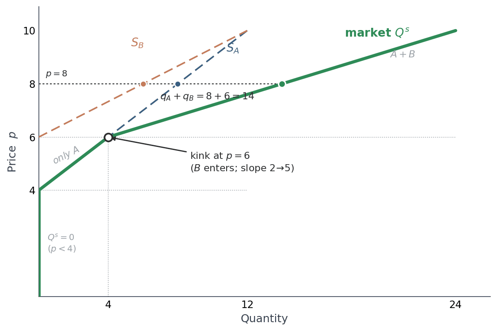
The market curve is the horizontal sum — at each price, add up the firms' quantities.
Read at \(p=8\): \(q_A=2(4)=8\) and \(q_B=3(2)=6\), so \(Q^{s}=14\).
Nothing is produced below \(p=4\). The curve kinks at \(p=6\) when \(B\) switches on — continuous (\(Q=4\) on both sides), but the slope jumps \(2\!\to\!5\).
§10.4
Short-Run Market Equilibrium
\(N\) fixed — the price does the adjusting: \(N\cdot q^*(P^*) = Q^d(P^*)\)
Entry, Exit, and the Zero-Profit Result
Picture the burger joints around campus. Watch how one news headline sets the whole market in motion:
1 · The calm
In long-run equilibrium every shop earns zero economic profit — owners just cover costs plus their next-best alternative. Nobody enters, nobody leaves.
2 · The shock
Northeastern approves a 1,370-bed dorm down the block. Overnight ~1,370 new students live next door → burger demand jumps.
3 · The signal
More demand → price rises \$8 → \$10 a burger → shops suddenly earn positive economic profit. What happens next?
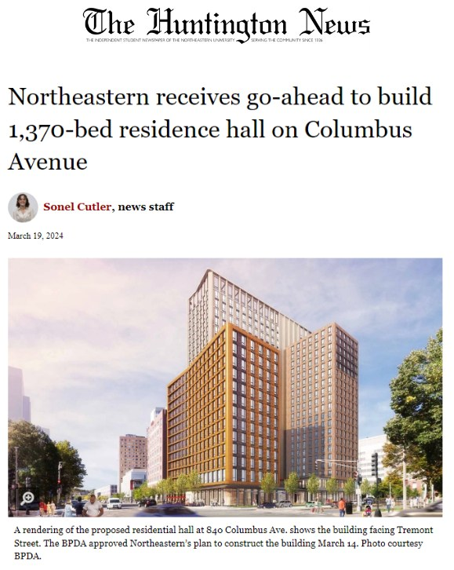
The real headline (Mar 2024) — the demand shock that starts our story.
In the Short Run: Positive Economic Profit
Burger example — the campus market from the previous slide, one shop and the whole market side by side.
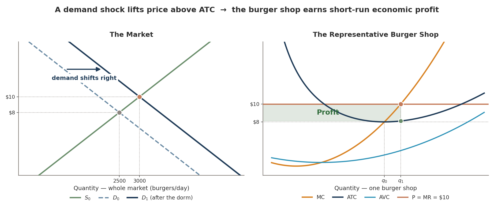
The new dorm opens → demand shifts right (D₀→D₁) → the burger price rises \$8 → \$10. Each shop slides up its \(MC\) curve to \(q_1\), and since P > ATC it pockets the shaded profit rectangle.
But with free entry, economic profit is a magnet — it lures new shops in. That’s the trigger for what happens next.
With \(N\) Fixed, Price Clears the Market
In the short run, \(N\) is exogenous — entrants are still raising capital and building. The market clears by adjusting price:
\(N\cdot q^*(P^*) = Q^d(P^*)\)
New in Ch 10 — demand calibration
Calibrate to 2025 global Li-ion demand (Benchmark Mineral Intelligence): \(Q^d(\$82.81)=1{,}590\) GWh. Two points give the linear demand:
\(Q^d(p) = 5{,}911.43 - 52.185\,p\)
Demand elasticity at \(p^{LR}\): \(\varepsilon^d = -52.185\cdot 82.81/1{,}590 \approx -2.72\). Highly elastic — cheaper packs make cheaper EVs.
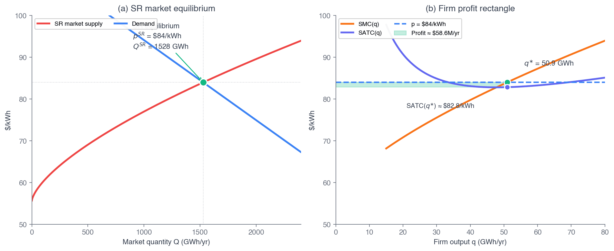
Fig 10.3 — SR equilibrium with the firm's profit rectangle.
With \(N\) fixed, that clearing price can leave every firm with positive economic profit — the campus burger market after the dorm shock. Nothing competes it away until entry is possible.
Walkthrough 10.2 — SR Equilibrium with \(N_{SR}=30\)
Problem
30 symmetric gigafactories share the market. Find \((P^*, Q^*)\), per-firm output, and each firm's profit.
Given
\(N_{SR}=30\) · \(q^*(84)=50.93\) GWh (from Ch 9)
\(Q^d(p)=5{,}911.43-52.185p\)
① Industry supply
Each firm at \(p=\$84\) makes \(q^*=50.93\) GWh, so
\(Q = 30\times 50.93\)
\(= 1{,}527.9\) GWh
② Does demand agree?
\(Q^d(84) = 5{,}911.43 - 52.185(84)\)
\(= 1{,}527.9\) GWh ✓
market clears at \(P^*=\$84\)
③ Profit per firm
From Ch 9: \(\pi^* = \$58.6\)M/yr — a 1.4% operating margin.
\(P^*=\$84 > p^{LR}=\$82.81\), so profit is positive.
Takeaway. At \(N_{SR}=30\) the Ch 9 snapshot is an SR equilibrium — by construction, since demand was calibrated through it. What matters is the profit: the \$1.19 wedge between \$84 and the \$82.81 break-even price is the slack that will drive entry — next.
Which Way? #1 — Price Above the Break-Even
Thirty plants sell at \(p=\$84\)/kWh, while \(\min LRATC=\$82.81\). Over the next few years, what happens?
60 sec to vote
Answer: B — firms enter until \(p=\min LRATC\)
At \$84 every plant earns positive economic profit, so new plants are built. Entry shifts market supply right, and the price falls until it reaches \$82.81, where profit is zero. The number of firms rises (to about 50 at the 32 GWh plant size).
Why the others miss: A — the sign is backwards: firms exit only when \(p < \min LRATC\). C — entry adds supply, so the price cannot stay up. D — economic profit is already net of the next-best return, so any positive amount attracts entry.
§10.5 — the central derivation
Long-Run Free-Entry Equilibrium
\(\pi^{LR}=0 \iff p^{LR}=\min LRATC\), and \(N^*\) absorbs demand
Entry Drives Profit to Zero
Still the burger market — the short-run profit at \$10 from the dorm shock is a magnet for entry. Here is the long-run dance:
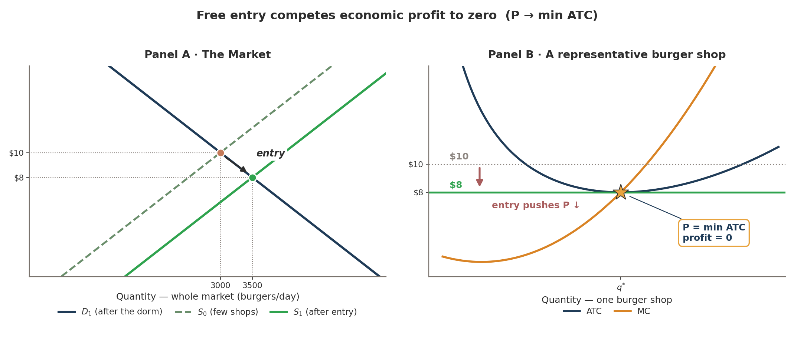
Owners see the profit → new shops open → supply shifts right → price falls → back to zero profit. Overshoot? Some exit, price rises. It settles.
In the panels: entry shifts market supply right (S₀→S₁), price falls \$10→\$8; the shop's profit rectangle shrinks to nothing at P = min ATC (gold star).
The market ends at the price where every surviving shop sits at the bottom of its ATC curve — its efficient scale.
The rule: \(\pi^{LR}=0 \iff p^{LR}=\min LRATC\). Gigafactory: long-run \(K\!+\!L\) cost \$27.21 plus materials \$55.60 gives \(\min LRATC = \mathbf{\$82.81}\)/kWh.
Overshoot: Even More Stores Open, Now a Loss
The profit got over-hyped — a flood of new shops.
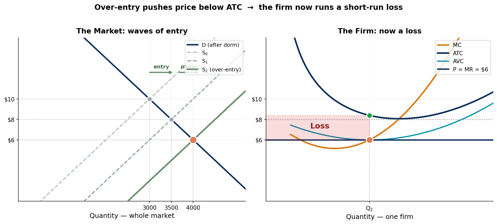
Entry overshoots: so many shops open that supply slides right past $8 all the way to $6 — below ATC. Now P < ATC, so the firm runs a loss (red box). Losses are the exit signal → some shops close → supply contracts → price climbs back to $8.
…and then exit restores zero profit. A chain closes a location, market supply shifts back left, price recovers to \(\min LRATC\). Entry and exit are the same mechanism running in opposite directions.
Exit Restores Zero Profit
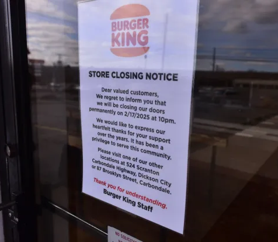
A burger chain closes a location — a firm exits the market.
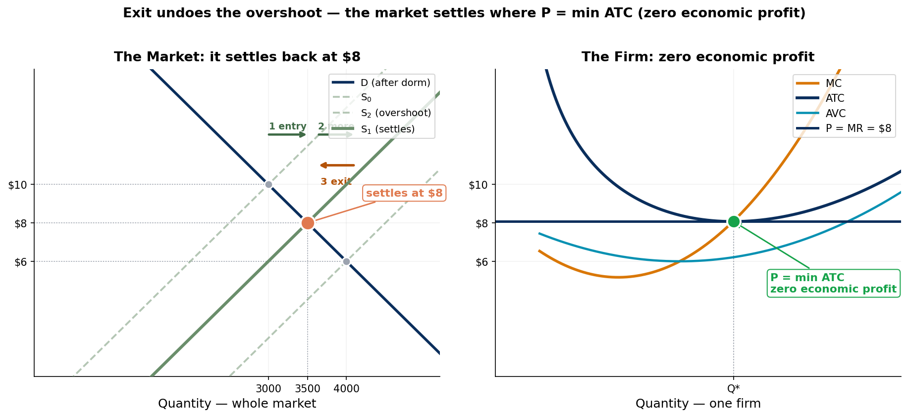
Losses force exit: supply contracts, price climbs back from \$6 to \$8. The dance ends where it must — P = min ATC, every surviving firm earning exactly zero economic profit.
Four Equalities, One Resting Point
\(p = MR\) — every firm is a price-taker, \(\partial p/\partial q_i = 0\)
\(p = MC\) — every firm is profit-maximizing — the Ch 9 FOC
\(p = \min LRATC\) — entry and exit drove profit to zero
∴ \(LRMC = LRATC\) at the firm's output
All four hold at once — and only in long-run competitive equilibrium.
Where our calibration differs
In the U-shaped picture you drew in Principles, \(LRMC\) cuts \(LRATC\) exactly at its minimum — so the fourth line pins down a unique efficient scale \(q^*\).
Under our CRS calibration \(LRATC\) is flat, so \(LRMC = LRATC = \$82.81\) at every \(q\). The equality holds everywhere, and firm output is indeterminate — call it the CRS knife-edge.
That is precisely why the next slide makes \(N^*\), not \(q^*\), the equilibrating variable.
Calculus Corner 10.2 — The Firm Count \(N^*\)
Because \(LRATC\) is flat under CRS, at \(p=\$82.81\) every output earns zero profit — so the firm's output is indeterminate (the CRS knife-edge). Set each firm at the Ch 7 plant size \(q^*=32\) GWh; demand then pins the firm count:
\[ N^* = \frac{Q^d(p^{LR})}{q^*} = \frac{5{,}911.43 - 52.185(82.81)}{32} \]
\(= \dfrac{1{,}590}{32} = 49.69 \approx \mathbf{50}\)
\(N^*\) is the equilibrating variable. If demand were 2,000 GWh, \(N^*=63\). The price doesn't move — the firm count does. This resolves the CRS knife-edge.
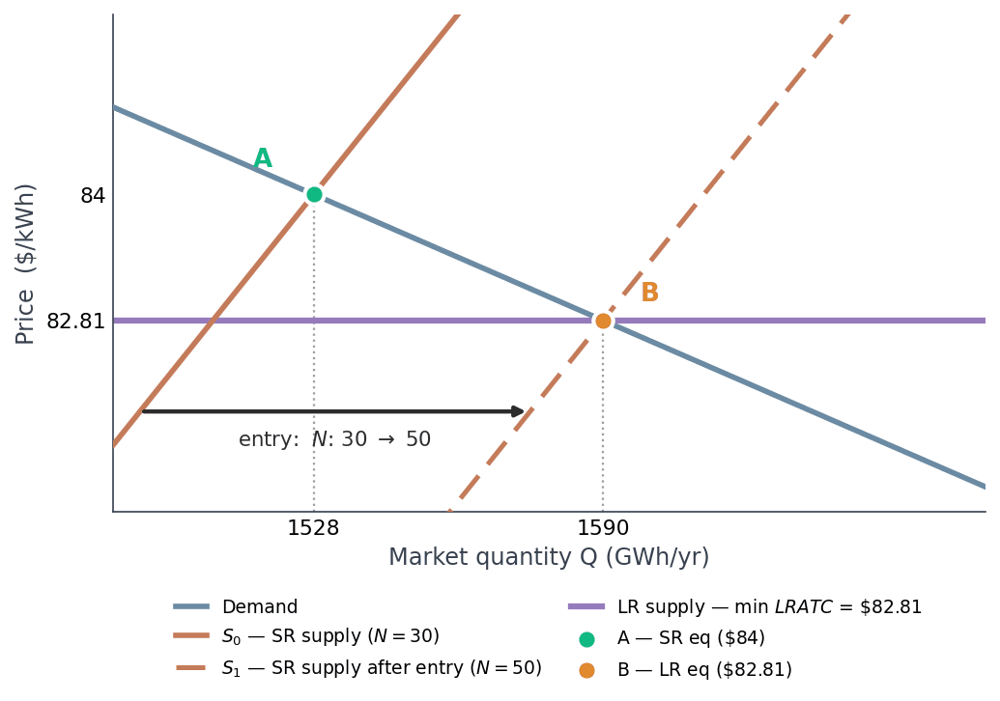
Entry shifts SR supply \(S_0\!\to\!S_1\); the new SR eq sits on the horizontal LR supply — A (\$84) → B (\$82.81), \(\pi=0\).
Walkthrough 10.3 — Now Run It on the Burger Market
Problem
Same formula, different market. Find the long-run price, market quantity, and the number of burger shops the campus market supports.
Given
\(\min LRATC = \$8\)/burger
\(Q^d(P)=5{,}500-250P\) · \(q^*=175\)/day
① Free entry pins the price
Entry continues while \(\pi > 0\), so price falls to the break-even point:
\(P^{LR} = \$8\)
② Demand at that price
\(Q^d(8) = 5{,}500 - 250(8)\)
\(= 3{,}500\) burgers/day
③ Divide by shop size
\(N^* = \dfrac{3{,}500}{175}\)
= 20 burger shops
Trace the adjustment. Before entry, 15 shops served \(Q^d(10)=3{,}000\) burgers at \$10 — 200 each, at a profit. Entry of 5 more shops drives price to \$8; per-shop output falls \(200 \to 175\) as each slides back down its \(MC\) curve, and profit falls to zero.
Takeaway. \(N^* = Q^d(\min LRATC)/q^*\) works for any market — gigafactories at \$82.81 gave \(N^*=50\); burgers at \$8 give \(N^*=20\). Read the cost side, read demand at that price, divide by plant size.
Poll #1 — Demand Rises. What Adjusts?
In long-run competitive equilibrium with free entry and constant returns to scale, global battery demand rises permanently. In the new long-run equilibrium, which variable absorbs the increase?
60 sec to vote
Answer: C — the firm count \(N^*\) rises
Free entry pins \(p^{LR}=\min LRATC=\$82.81\); CRS leaves per-firm output undetermined, so we hold it at the baseline plant \(q^*=32\) GWh. Only the firm count absorbs demand:
\( N^* = Q^d(p^{LR})/q^* \quad\Rightarrow\quad 1{,}590\to 2{,}000 \text{ GWh} \;\Rightarrow\; N^* = 50 \to 63 \)
Why the others miss: A — price is fixed by free entry, not by demand. B — under CRS, individual firm output is indeterminate (set at plant size). D — CRS means constant marginal cost.
Walkthrough 10.4 — Long-Run Exit at \(p < \min LRATC\)
Problem
Price sits persistently below the \$82.81 break-even price. Find long-run profit and the exit decision.
Given
\(p = \$80\)/kWh · \(\min LRATC = \$82.81\)
CRS, so \(LRATC\) is constant in \(q\)
① The per-unit margin
\(\pi^{LR}(q) = (p - \min LRATC)\,q\)
\(80 - 82.81 =\) \(-\$2.81\)/kWh
② So how much to produce?
At the baseline plant \(q=32\): loss \(=-2.81\times 32\)
\(=-\$89.92\)M/yr
Loss grows with \(q\), so the best response is \(q=0\) — exit.
③ It self-corrects
As firms exit, market quantity falls and price rises back up the demand curve toward \$82.81.
\(p=\$80\) is a transient, not an equilibrium.
Why is there no "operate at a loss" band here? In the short run, fixed cost is sunk, so a firm keeps producing over the range \(\min AVC \leq p < \min ATC\) (Ch 9). In the long run every cost is avoidable, so that band disappears and the decision is binary.
Takeaway. Under CRS, LR exit is automatic whenever \(p<\min LRATC\): \(p\geq\min LRATC\) → operate; \(p<\min LRATC\) → exit. Free entry and exit force \(p=\min LRATC\) exactly.
§10.6
Long-Run Market Supply
Symmetric firms → flat; heterogeneous firms → upward-sloping + Ricardian rents
When Firms Differ, LR Supply Slopes Up
Symmetric firms → LR supply is horizontal at \(\min LRATC=\$82.81\): below it all firms exit, above it infinite entry. \(N^*\) adjusts at the flat price.
But real firms differ — management, technology vintage, input access, location. Let potential entrants have \(\min LRATC \sim F(c)\). At price \(p\), firms with cost \(\leq p\) enter:
\(Q^s_{LR}(p) = N_{\text{pot}}\,q^*\,F(p), \quad \frac{dQ^s_{LR}}{dp} = N_{\text{pot}}\,q^*\,F'(p) > 0\)
Infra-marginal firms (cost strictly below \(p\)) earn Ricardian rents \((p-\min LRATC_i)\cdot q^*\); the marginal firm earns zero. (Formalized by Melitz 2003.)
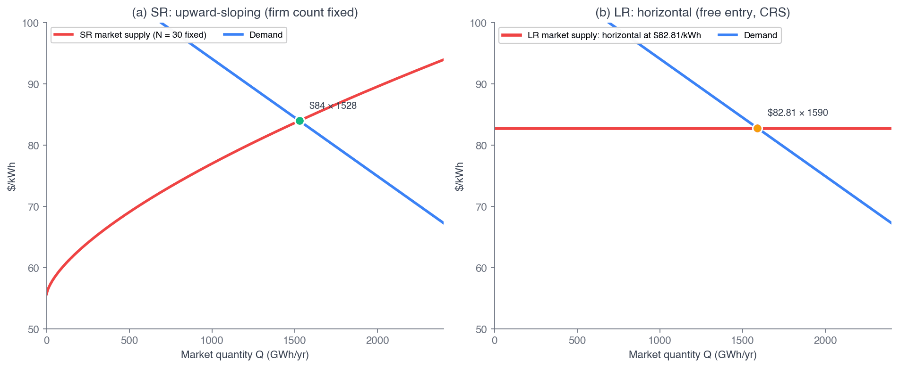
Fig 10.7 — SR supply (steep, \(N\) fixed) vs LR supply (flatter, entry/exit).
Cost Differences & Economic Rent
In the long run a competitive industry earns no economic profit — but that result assumes every firm has identical cost curves.
Real firms differ. More-efficient firms earn economic rent: a return to a specialized input above what the firm paid for it.
With different LR cost curves, price settles at the min ATC of the highest-cost (marginal) firm. That firm earns zero profit and zero producer surplus; every lower-cost firm pockets rent.
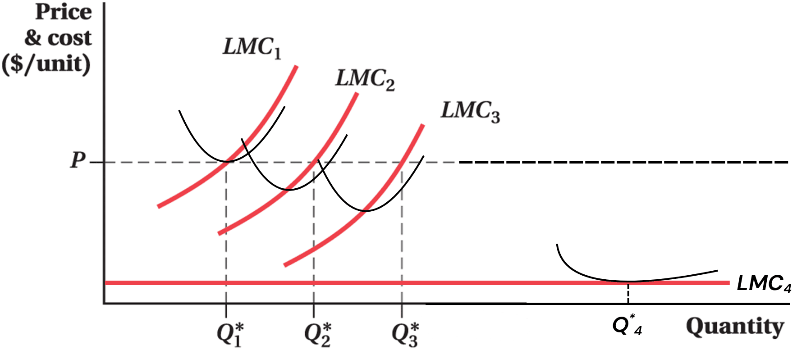
Heterogeneous firms (\(LMC_1\)–\(LMC_4\)). Each produces where \(LMC=P\); lower-cost firms earn rent (\(P\) above their min ATC), the marginal firm earns none.
Economic Rent ≠ Economic Profit
The most common mix-up in this section. A firm can pay large rents to its scarce inputs and still earn zero economic profit — because the rent is a cost, not a profit.
Economic rent
A return to a specialized input, counted inside that input's opportunity cost. Rents accrue to the more-productive-than-average input — a star manager, a trade secret, a corner with 40,000 people walking past.
Economic profit
What's left after subtracting all opportunity costs — including the rents paid to specialized inputs. Free entry competes this to zero in the long run, even while rents persist.
Same chain, two addresses — a Five Guys in Back Bay and one in Brookline. Illustrative figures, 350 trading days a year.
Back Bay
900 burgers/day · \$4 over non-rent costs
→ contribution \$1.26M/yr
− site rent \$1.26M
= \$0 economic profit
Brookline
500 burgers/day · \$4 over non-rent costs
→ contribution \$0.70M/yr
− site rent \$0.70M
= \$0 economic profit
Who captured the foot traffic?
The \$560K rent gap is exactly the extra contribution Back Bay's location generates. Competition among chains for that corner bids the rent up until it absorbs the whole advantage — so the landlord collects it, not Five Guys.
Takeaway. The Back Bay store is not more profitable — it is more expensive, by exactly the amount it is more productive. Zero economic profit does not mean nobody is getting rich; owners of the scarce input collect the rent.
Walkthrough 10.5 — LR Supply with a Uniform Cost Distribution
Problem. 100 potential operators, each with its own \(\min LRATC\), spread evenly from \(\$80\) to \(\$90\): 10 operators in every \$1 band. Each active firm produces \(q^*=32\) GWh. Find LR market supply on \([80,90]\).
Set up & solve
Active firms = the dots left of the price: 10 per \$1 above \$80, so \(N(p) = 10(p-80)\).
Market supply: \(Q^s_{LR}(p) = 10(p-80)\times 32 = 320(p-80)\) GWh. At \$85: 1,600 GWh.
Check the endpoints
At \(p=\$80\): no dot lit, \(Q^s_{LR}=0\). At \(p=\$90\): all 100 lit, \(320\times 10 = 3{,}200\) GWh.
Slope \(dQ^s_{LR}/dp = 320\): each extra \$1 lights one more column, \(10 \times 32\) GWh.
Takeaway. Heterogeneous costs → upward-sloping LR supply. Bunch the costs tighter and the columns get taller, so each \$1 lights more firms: a flatter curve. Spread them wider: steeper. The marginal firm earns zero; infra-marginal firms earn Ricardian rents.
The 100 Operators, Lined Up Cheapest First
§10.7
The First Welfare Theorem
Is the competitive equilibrium good? — \(TS(Q)=\int_0^Q [P^d-P^s]\,dq\)
Three Efficiencies, Achieved Without a Planner
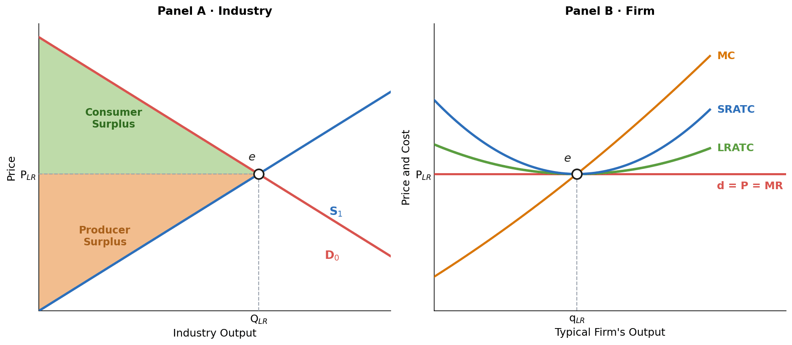
Panel A — surplus is maximized at \(e\). Panel B — the firm's flat demand is tangent to \(LRATC\) at its minimum. Drawn for the general U-shaped case; under CRS the tangency flattens into coincidence.
\(p = MR = MC = \min SRATC = \min LRATC\)
Productive efficiency — output is made at the lowest attainable unit cost, \(p = \min LRATC\). A firm carrying waste is undercut and exits.
Allocative efficiency — the price buyers pay equals the marginal cost of the last unit made, \(p = MC\). No mutually beneficial trade is left undone.
Pareto efficiency — no rearrangement of who produces or who consumes can make anyone better off without making someone else worse off. There is nothing left on the table.
The First Welfare Theorem
Every competitive equilibrium is Pareto efficient.
Given §10.2's four conditions, the market lands on an allocation no planner could improve on without making somebody worse off — and it gets there with nobody in charge.
§10.7 proves a stronger version — total surplus is maximised — which needs surplus to be transferable between people. Pareto efficiency is the general statement that survives without that assumption.
Producer Surplus for a Competitive Firm
Marginal cost slopes upward, so some output is sold at a price above its cost of production. Producer surplus is the sum of the gaps between price and marginal cost over every unit produced.
Two equivalent views below: sum the per-unit \(P-MC\) markups (a), or read the same area as the \((P-AVC^*)\,Q^*\) rectangle (b).
\(PS = TR - VC\)
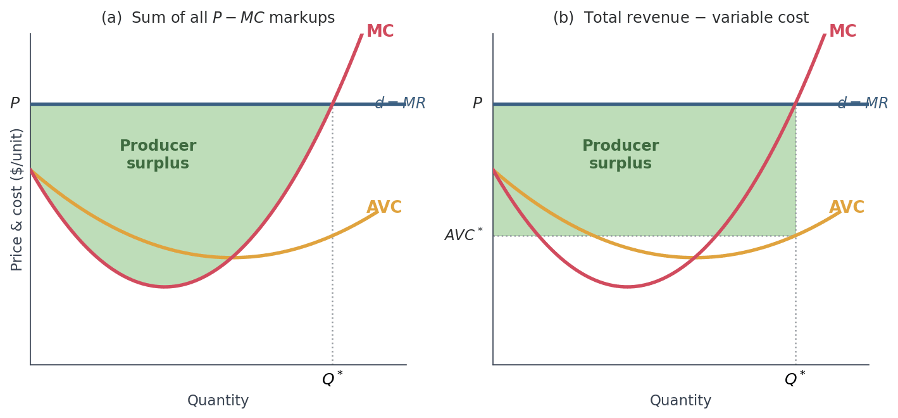
The area between \(P\) and \(MC\) equals the \((P-AVC^*)\,Q^*\) rectangle \(=TR-VC\).
Seen this area before?
On the cost ladder in §10.6 the same wedge was shaded and called Ricardian rent. Same area — two different questions.
PS asks how much surplus production creates; rent asks who keeps it. Hire the scarce input and the rent becomes a cost — Back Bay's landlord again.
Producer Surplus Is Not Profit — \(\pi = PS - FC\)
Producer surplus is closely related to profit — but they are not the same thing.
\(PS = TR - VC\)
\(\pi = TR - VC - FC = PS - FC\)
They differ by exactly fixed cost: PS ignores \(FC\) (sunk in the short run); profit subtracts it.
Producer surplus for a competitive industry
• Industry PS = the sum of every firm's surplus.
• In perfect competition the supply curve is the MC curve above min \(AVC\) — so industry PS is the area above supply, below price.
Watch the run. In the long run every cost is avoidable, so \(FC=0\) and \(PS=\pi\). That is why the free-entry case in W10.6 has \(PS=0\): there, "zero profit" and "zero producer surplus" are the same sentence.
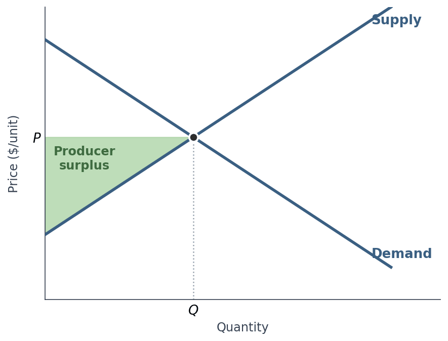
Industry PS — the area above the supply curve and below price, up to \(Q\).
Competitive Equilibrium Maximizes Total Surplus
Recall the surplus integrals from Ch 2. Total surplus is the sum — and the price cancels:
\[ TS(Q) = \int_0^Q [P^d(q) - P^s(q)]\,dq \]
The integrand is positive for \(q < Q^*\) (demand price exceeds supply price — a mutually beneficial trade) and negative for \(q > Q^*\). So \(TS\) rises until \(Q^*\) and falls after. The maximum is at \(Q^*\). That's the proof.
Heads Up 10.4
The theorem is an equilibrium statement: if the market reaches the competitive equilibrium, total surplus is maximal. It says nothing about how fast, or about fairness, equality, or sustainability.
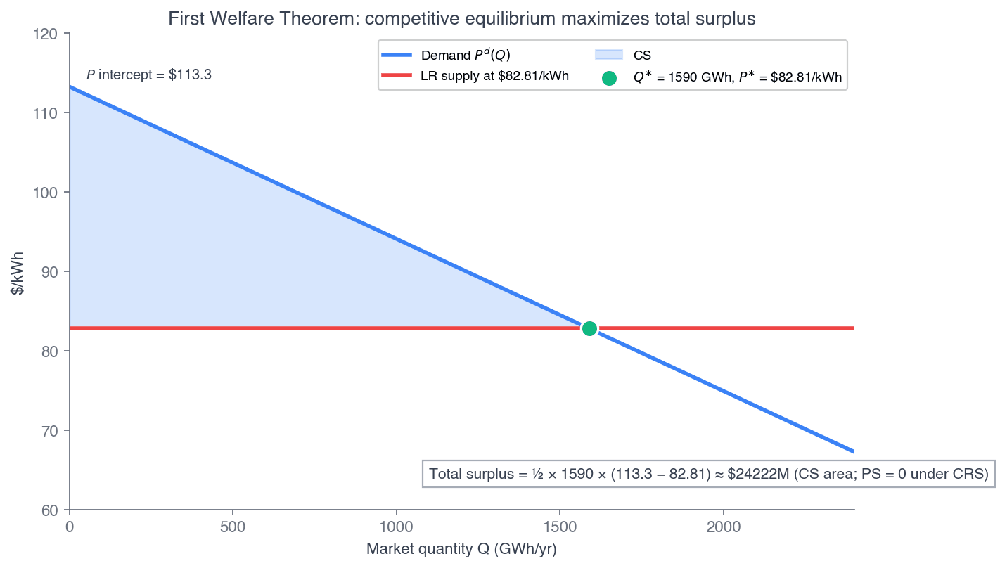
Fig 10.6 — CS + PS, maximized at \(Q^*\).
The Efficiency–Equity Tradeoff
Bigger pie
A lighter tax, a freer market — often enlarges total surplus but slices it less equally.
Fairer slices
A minimum wage, a progressive tax — shares the pie more evenly but can shrink it.
The same tension, across the course:
Ch 2–3
Rent control
Tenants pay less now (fairer) — but shortages & deadweight loss (smaller pie).
Ch 3
Minimum wage
Lifts low-wage pay (fairer) — but can price the least-skilled out of work (smaller pie).
Ch 10
Competitive market
Maximizes total surplus (biggest pie) — but who gets what is set by endowments, not need.
Ch 11
Monopoly & patents
Patents reward innovation (future pie) — but above-cost prices lock buyers out (DWL today).
Positive analysis sizes the tradeoff at each point. It cannot pick a point — that depends on values.
We meet it at tax incidence (Ch 3), the welfare theorem (Ch 10), the environment (Ch 17), and income distribution (Ch 19).
Calculus Corner 10.3 — The Proof in Two Derivatives
Differentiate \(TS(Q) = \int_0^Q [P^d-P^s]\,dq\):
\[ \frac{dTS}{dQ} = P^d(Q) - P^s(Q) \]
FOC: \(\dfrac{dTS}{dQ}=0 \iff P^d(Q^*)=P^s(Q^*)\) — exactly the competitive equilibrium.
\[ \frac{d^2 TS}{dQ^2} = \underbrace{\tfrac{dP^d}{dQ}}_{<0} - \underbrace{\tfrac{dP^s}{dQ}}_{>0} < 0 \]
SOC negative → \(Q^*\) is a maximum.
The calculus says the same thing as the geometry: the competitive quantity is where inverse demand meets inverse supply, and the second-order condition confirms it's a peak, not a trough.
We've now seen these surplus integrals three times: Ch 2 introduced them, Ch 3 used them for tax DWL, and Ch 10 uses them to prove the competitive \(Q^*\) is optimal, not just consistent.
The argument generalizes: any well-behaved S&D system (demand down, supply up) has a competitive equilibrium that maximizes total surplus.
Walkthrough 10.6 — What Is Free Entry Actually Worth?
Problem
Back to the campus burger market of W10.3. Compute total surplus under free entry, then under a cap at 15 shops, and price the difference.
Given
\(Q^d = 5{,}500-250P\), so \(P^d(Q)=22-0.004Q\)
Efficient scale \(q^*=175\)/day at \(\min LRATC=\$8\)
Held to 15 shops, each runs 200/day. We still price every burger at \$8, so the \$500 below is a lower bound on the harm
① Free entry — 20 shops
Free entry sets \(P=\$8\), so each shop sits at efficient scale: \(Q=20\times175=3{,}500\). Choke price \(P^d(0)=\$22\).
\(CS=\tfrac12(22-8)(3{,}500)=\) \$24,500
\(PS=(8-8)(3{,}500)=\) \$0
\(TS=\$24{,}500\)/day
② Cap entry at 15 shops
\(Q=15\times200=3{,}000\) → demand pays \(P=\$10\).
\(CS=\tfrac12(22-10)(3{,}000)=\) \$18,000
\(PS=(10-8)(3{,}000)=\) \$6,000
\(TS=\$24{,}000\)/day
③ Price the difference
Free entry is worth \$500/day — and that is exactly the lost-trades triangle:
\(\tfrac12(3{,}500-3{,}000)(10-8)=\$500\) ✓
The other \$6,000 is not destroyed — it is transferred from consumers to the 15 incumbents.
The §10.7 machinery, on these numbers. \(TS(Q)=\int_0^{Q}\!\left[P^d(q)-8\right]dq\), so \(\dfrac{dTS}{dQ}=22-0.004Q-8=0 \Rightarrow Q^{*}=3{,}500\), and \(\dfrac{d^2TS}{dQ^2}=-0.004<0\). The competitive quantity is the surplus-maximising one — no separate optimisation needed.
Takeaway. With free entry driving price to \(\min LRATC\), \(PS=0\) — every dollar of surplus goes to consumers. Restricting entry does not "protect producers" at no cost: it hands them \$6,000/day taken from consumers and loses \$500/day on top.
§10.8
Long-Run Adjustment
Entry and exit carry a competitive market from one long-run equilibrium to the next
Adjustment to an Increase in Demand
Back to the campus burger market, start to finish. The new dorm pushes demand out, \(D_0\!\to\!D_1\).
Short run (A): still 15 shops. The price jumps \$8 → \$10, above \(ATC\), so each shop earns positive economic profit.
Long run (B): 5 new shops enter, supply shifts out \(S_0\!\to\!S_1\), and the price falls back to min \(ATC\) = \$8.
Net: 15 → 20 shops, 2,500 → 3,500 burgers a day, same \$8.
![Four-panel burger-market figure: panel a shows demand shifting out from D0 to D1 after the dorm, the price rising from 8 to 10 dollars at point A with 15 shops, then entry shifting supply from S0 to S1 and the price returning to 8 dollars at point B with 20 shops on the flat long-run supply line; panel b shows one shop earning a profit rectangle at 10 dollars and zero profit at minimum ATC of 8 dollars; panels c and d show the price jumping to 10 dollars and returning to 8, while burgers a day rise from 2,500 to 3,000 and then to 3,500](figures/fig-lr-adjust-demand.png)
A cost increase runs the trace the other way: \(ATC\) and \(MC\) shift up ⇒ shops exit ⇒ the price settles at the new, higher \(\min ATC\).
Adjustment to an Increase in Production Costs
Start at B: 20 shops, \$8. Now beef, buns and wages climb, and every burger costs \$1.40 more to make. Each shop’s \(MC\) and \(ATC\) shift up \$1.40, so min \(ATC\) = \$9.40.
Short run (C): still 20 shops. The price rises only to \$8.70, below the new \(ATC\), so each shop runs a loss.
Long run (D): 2 shops exit, supply shifts in to \(S_2\), and the price rises to the new min \(ATC\) = \$9.40.
Net: 20 → 18 shops, 3,500 → 3,150 burgers a day, price \$8 → \$9.40.

Walkthrough 10.7 — HPAI Recovery via the Shifter \(\alpha\)
Problem. Demand \(Q^d=200-5P\); supply with recovery shifter \(Q^s(p,\alpha)=20+10p+\alpha\). Trace SR→LR adjustment as \(\alpha\) rises from 0 (full shock) through 15 (partial) to 30 (full recovery).
Set up & solve
Clearing: \(200-5P=20+10P+\alpha \Rightarrow P^*(\alpha)=(180-\alpha)/15\).
| \(\alpha\) | \(P^*\) | \(Q^*\) | State |
|---|---|---|---|
| 0 | \$12 | 140 | full shock |
| 15 | \$11 | 145 | partial |
| 30 | \$10 | 150 | pre-shock |
Check & interpret
Comparative statics: \(dP^*/d\alpha = -1/15\) (price falls as flock recovers); \(dQ^*/d\alpha = 1/3\) (quantity rises).
Full recovery (\(\alpha=30\)) returns supply to \(Q^s=50+10P\) — exactly the pre-shock equilibrium \((\$10, 150)\).
Takeaway. Adjustment runs through \(\alpha\) (the flock rebuild), not firm entry. No new firms needed — but the welfare theorem still holds at each instant: \(p=MC\), efficient given the current flock.
Long-Run Supply in Constant-, Increasing-, and Decreasing-Cost Industries
So far we assumed LR average cost is constant at every output level. In general, the slope of the long-run supply curve depends on what happens to firms' costs as the whole industry expands through entry.
Increasing-cost — LR average cost rises with industry output (competition over a scarce input, e.g., oil) ⇒ upward-sloped \(S_{LR}\) (Panel A).
Constant-cost — LR average cost is unchanged by industry output (the baseline so far) ⇒ horizontal \(S_{LR}\) (Panel B).
Decreasing-cost — LR average cost falls with industry output (industry-level increasing returns, or cheaper inputs) ⇒ downward-sloped \(S_{LR}\) (Panel C).

Demand rises \(D_0\!\to\!D_1\): the market jumps from \(a\) to \(b\) in the short run, then entry carries it to the new long-run equilibrium \(c\). \(S_{LR}\) joins \(a\) and \(c\).
§10.9
When the Welfare Theorem Fails
Break condition 1 — and the triangle appears. A preview of all of Part IV & V
Which Way? #2 — One Owner for All Twenty Shops
One chain buys all 20 campus burger shops. Today they sell 3,500 burgers a day at \$8, and \(MC=\$8\). Market demand is \(P^d(Q)=22-0.004Q\). Is selling the 3,500th burger worth it to the chain?
60 sec to vote
Answer: B — MR is below the price, so the chain cuts output
With \(P^d(Q)=22-0.004Q\), marginal revenue is \(MR=22-0.008Q\). At \(Q=3{,}500\), \(MR=22-28=-\$6\), far below \(MC=\$8\): one more burger lowers the price on all 3,500. Cutting output raises profit. The next slide finds where it stops: \(Q=1{,}750\), \(P=\$15\).
Why the others miss: A — MR = P only for a price taker. C — the sign is backwards. D — more output lowers the price on every unit sold.
Walkthrough 10.8 — What If One Chain Owns All Twenty?
This one is a preview. Everything so far assumed §10.2's four conditions hold. From here to the end of the course we break them one at a time — and this is the first break, done with numbers you already have.
Problem
The same campus burger market. One chain buys all 20 shops and sets a single price. Condition 1 — many small firms — is gone. Find price, quantity, and what happens to surplus.
Given
\(P^d(Q)=22-0.004Q\)
\(MC=\$8\) — the chain can run any number of 175-a-day shops, so its marginal cost is the efficient-scale unit cost
Competitive benchmark: \(P=\$8,\ Q=3{,}500\)
① Now \(MR \neq P\)
Selling one more burger drags the price down on all of them, so \(MR\) falls twice as fast:
\(MR = 22-0.008Q\)
\(MR=MC:\ 22-0.008Q=8\)
\(Q=1{,}750,\ P=\$15\)
② Split the surplus
\(CS=\tfrac12(22-15)(1{,}750)=\) \$6,125
\(PS=(15-8)(1{,}750)=\) \$12,250
\(TS=\$18{,}375\)/day
Output halves; price nearly doubles.
③ The damage
\(TS:\ \$24{,}500 \to \$18{,}375\), so
\(DWL=\$6{,}125\)/day
\(\tfrac12(3{,}500-1{,}750)(15-8)=\$6{,}125\) ✓
Two failures, priced in the same units. Capping entry at 15 shops (W10.6) cost \$500/day. Handing the market to one seller costs \$6,125/day — 12× worse — plus a \$12,250/day transfer. Limiting how many compete is bad; removing competition altogether is another order of magnitude.
Takeaway. No cost changed — \(MC\) is still \$8. Only condition 1 broke, and with it \(\partial p/\partial q = 0\); that wedge between \(MR\) and \(P\) is the whole of Chapter 11.
And the rest of the course is the rest of the list: ① many small firms → Ch 11–14 · ② homogeneous product → Ch 12–13 · ③ free entry → Ch 11 (Starlink) · ④ perfect information → Ch 15–16 · plus the assumption we never said aloud, no externalities → Ch 17.
§10.10 — From Metaphor to Theorem
How "the invisible hand" became something you can actually prove — three steps, 178 years.
1776
Adam Smith
The invisible hand — a metaphor. Self-interest somehow produces order. No equations, no proof, no statement of when it fails.
1874
Léon Walras
Writes it as simultaneous equations: one price vector clearing every market at once. To explain how a market finds it with no planner, he invents the tâtonnement — an imaginary auctioneer who raises prices where there is excess demand and lowers them where there is excess supply.
1954
Arrow & Debreu
Prove an equilibrium exists, and give both welfare theorems their rigorous form. Walras saw the structure; he did not prove it. This is the machinery behind the result we used in §10.7.
Where our proof sits. §10.7 was partial equilibrium — one market, everything else held fixed. Walras's frame is general equilibrium — all markets at once, which is what you need before "the market allocates efficiently" means anything economy-wide.
The Second Welfare Theorem — any Pareto-efficient allocation can be supported by some competitive equilibrium, given the right redistribution — is the other half of Arrow–Debreu. Both are graduate-level; Walras pointed at them in 1874.
Notice what tâtonnement is: a thought experiment. Walras never ran it. Next slide: we do.
Classroom Experiment — Finding the Clearing Price
Back to the campus burger market. Walras's auctioneer gathers everyone's willingness to trade and computes the price that clears the market. For the next ten minutes, that auctioneer is us.
What is about to happen
1. Your device deals you a card: a student buyer (the most one burger is worth to you) or a burger shop (what one burger costs you to make). Tell nobody your number.
2. Submit one number: buyers, the most you would pay. Sellers, the least you would accept.
3. You may bid strategically — buyers can offer less than their card, sellers can ask more. You just cannot go past your own limit.
4. When the round closes, every bid and every ask is sorted into two curves and we read off where they cross.
5. Five rounds, same card throughout. No talking — this one is silent.
What you earn. Buy a burger and you keep your card − the price. Sell one and you keep the price − your card. No trade earns you nothing.
So shading wins you a better price only if you still trade. That is the whole game.
Connecting…
Nobody here can see the market. You will know one number. The two curves do not exist anywhere until every one of you has submitted.
Scan the code or tap Join the market: your card, your number and your result are all on that screen.
Name Your Number
Connecting…
One number, once per round.
You may shade — but never past your own card. The box will stop you.
Did the Room Find It?
Each round's clearing price, with the trades it supported. Dashed line = the equilibrium hidden in the cards.
The result. The cards were dealt so the curves cross at \$8. That is the campus burger price from earlier: \(\min LRATC = \$8\). Nobody in the room could compute that — each of you knew exactly one number, and the curves existed only once all of them were pooled.
Shading costs trades, not price. Buyers who bid under their card and sellers who ask over theirs mostly cancel out — the crossing barely moves. What falls is the number of trades. Strategic play here reduces quantity, and that lost quantity is a deadweight loss with nobody collecting it.
But notice what we just did. We collected every willingness to trade and computed the price centrally. That is Walras's auctioneer, and no real market has one. Next slide: Smith shows the price gets found anyway.
Economist at Work — Vernon Smith, 1962
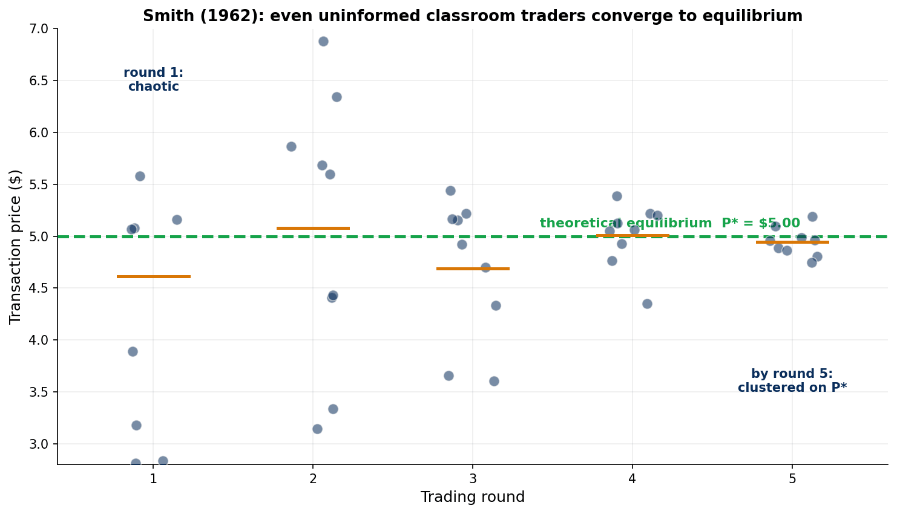
Walras's tâtonnement was a thought experiment. Smith ran it. Index cards handed each buyer a private maximum and each seller a private minimum — nobody could see the aggregate curves — and then he opened a double oral auction.
He expected it to fail. The theory assumes many traders and good information; he had a classroom and neither. Instead prices converged to the theoretical equilibrium within about five rounds, with only a handful of traders per side.
Convergence to \(p^*\) does not have to be assumed: it is an experimental finding. Launched experimental economics; Nobel Prize, 2002.
Chapter Summary
Four conditions
Many small firms, homogeneous product, free entry/exit, perfect info — a benchmark, not a literal description.
Market supply
Horizontal sum \(Q^s=\sum_i q_i^*\); symmetric → \(N q^*\); elasticity unchanged by \(N\).
LR free entry ★
\(p^{LR}=\min LRATC=\$82.81\); \(N^*=Q^d/q^*=1{,}590/32\approx 50\). Resolves the CRS knife-edge.
Welfare theorem
\(TS=\int_0^Q[P^d-P^s]dq\), maximized at \(Q^*\). Competitive equilibrium is efficient.
Heterogeneity & biology
Cost spread → upward-sloping LR supply + Ricardian rents. Eggs adjust biologically (18–20 wk pullets).
Failure preview
Monopolising the market breaks efficiency (\(DWL=\$6{,}125\)/day, 12× the harm of merely capping entry) — the template for Chs 11–17.
Why \$82.81? Because free entry pins \(p^{LR}=\min LRATC\). The gigafactory example ends here: the \$84 we fixed in Ch 9 is now endogenous, and the world needs \(N^*=50\) gigafactory-equivalents.
Coming Up — Chapter 11: Monopoly
Today the firm was a price taker with \(\partial p/\partial q = 0\). Chapter 11 flips the single assumption that drives everything about market power.
\(\dfrac{\partial p}{\partial q} < 0 \;\Rightarrow\; MR = p + \dfrac{\partial p}{\partial q}\,q < p \;\Rightarrow\; MR = MC \text{ at } Q_m < Q^*\)
- Marginal revenue below price: the monopolist's output drives price down along demand.
- The Lerner index: \((P-MC)/P = -1/\varepsilon\) — markup as the inverse of elasticity.
- Deadweight loss returns: \(Q_m < Q^*\), so the welfare theorem fails — exactly the §10.9 break, now the firm's own choice rather than a rule imposed on it.
Before Chapter 11: read §11.1–§11.3. This chapter's competitive equilibrium is the benchmark every later chapter measures against.
Questions?
Dr. Richeng Piao · ECON 2316 · Chapter 10